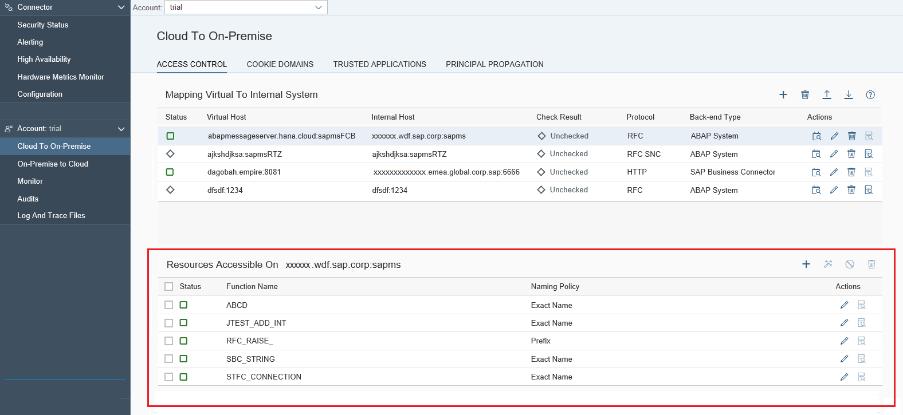
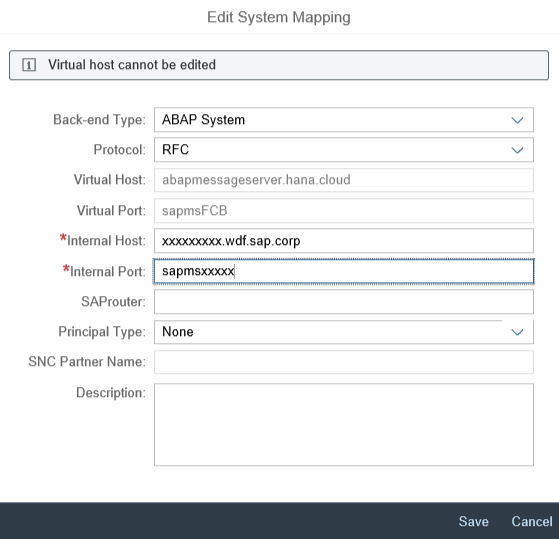

After installing a new Cloud connector in a network, no systems or resources of the network have been exposed to the cloud yet. You have to configure each system and resource that shall be used by applications of the connected cloud account. To do this, choose Cloud To On Premise from your account menu and go to tab Access Control:

Thereby, any type of system that can be called via one of the supported protocols (currently: HTTP and RFC), i.e. both SAP and non-SAP systems are supported. As an example, a convenient way to access an ABAP system in a cloud application is to do this via SAP NetWeaver Gateway, as it allows consumption of ABAP content via HTTP and open standards.
We recommend that you narrow the access only to those backend services and resources that are explicitly needed by the cloud applications. Instead of configuring, for example, a system and granting access to all its resources, we recommend that you only grant access to the concrete resources which are needed by the cloud application. For example, define access to an HTTP service by specifying the service URL root path and allowing access to all its sub-paths.
When configuring an on-premise system, it is possible to define a virtual host and port for the specified system, as shown in the screenshot below. The virtual host name and port represent the fully-qualified domain name of the related system in the cloud. We recommend that you use the virtual host name/port mapping in order to prevent from leaking information about the physical machine name and port of an on-premise system and thus – of your internal network infrastructure getting published to the cloud.
